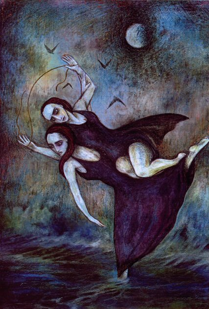

Fragment 16
For some - it is horsemen; for others - it is infantry;
For some others - it is ships which are, on this black earth,
Visibly constant in their beauty. But for me,
It is that which you desire.
To all, it is easy to make this completely understood
For Helen - she who greatly surpassed other mortals in beauty -
Left her most noble man and sailed forth to Troy
Forgetting her beloved parents and her daughter
Because [ the goddess ] led her away .....
Which makes me to see again Anactoria now far distant:
For I would rather behold her pleasing, graceful movement
And the radiant splendour of her face
Than your Lydian chariots and foot-soldiers in full armour .....

Previous -
Next